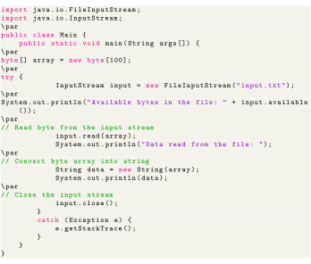

Next: Java OutputStream Class Up: Java I/O Streams Previous: Java InputStream Class Contents
The InputStream class provides different methods that are implemented by its subclasses. Here are some of the commonly used methods:
Here is how we can implement InputStream using the FileInputStream class. Suppose we have a file named input.txt with the following content.

Let's try to read this file using FileInputStream (a subclass of InputStream).

Output